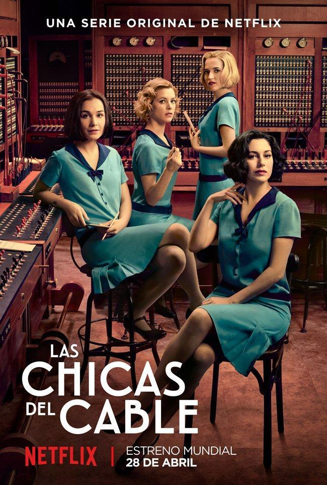

LAS CHICAS DEL CABLE
La serie de la que voy a hablar es el de "Las chicas del cable". Es la primera serie original de Netflix producida en España. Está protagonizada por Blanca Suárez, Yon González, Maggie Civantos, Ana Fernández, Nadia de Santiago, Martiño Rivas, Ana Polvorosa y Nico Romero. Esta serie fue creada por Ramón Campos, Gema Neira y Teresa Fernández y fue dirigida por Ramón Campos. Se estrenó mundialmente el 28 de abril de 2017.
Uno de los temas que abarca esta serie es la amistad, la cual muestra cómo a pesar de todos los problemas que surgen, las protagonistas siguen juntas y se apoyan mutuamente en todo momento. Asimismo, otro de los tema de importancia que es la lucha por la igualdad, ya que se observa continuamente cómo ellas quieren dejar en claro la igualdad de derechos en ambos sexos.
Las chicas del cable se grabó con una intención, siendo ésta que las mujeres se sientan poderosas, valientes, independientes y libres sin necesidad de depender de ninguna persona para poder conseguir lo que se proponen y defender sus ideales.
El resumen de esta serie es el siguiente:
Resumen:
La trama de la serie se centra principalmente en la vida de cuatro chicas teleoperadoras de la Compañía de telefonía, y aunque en un inicio el oficio de operador telefónico fuese destinado a los hombres jóvenes que hasta entonces se habían encargado de entregar telegramas, rápidamente pasó a ser un trabajo principalmente realizado por mujeres, porque era un oficio para el que se necesitaba un alto nivel de paciencia y conllevaba mucho estrés y muchos de los antiguos trabajadores no se acabaron de adaptar a la nueva tarea. Las operadoras se encargaban de conectar de manera manual las llamadas para poner en contacto a los interlocutores, y aunque la serie esté ambientada en la década de 1920, en España ya había operadoras telefónicas desde el año 1886 y en Cuba incluso antes, en 1877. Durante casi todo el siglo XX, hasta 1988, España tuvo centrales manuales hasta que finalmente acabó automatizando completamente el servicio telefónico. La última central manual de España fue la de Polopos, un pueblo de la provincia de Granada.
Para trabajar de operadora telefónica las mujeres debían cumplir ciertos requisitos: debían tener entre 18 y 27 años, no llevar gafas, estar solteras y ser capaces de estirar los brazos hasta un mínimo de 155 centímetros. Aparte de estos requisitos también debían superar ciertas pruebas de aptitud.
Y así como en la serie se representa a las telefonistas como un referente feminista, esto también fue una realidad: las primeras mujeres en trabajar como operadoras telefónicas marcaron un antes y un después en el mercado laboral para las mujeres, porque se salían de los estándares que hasta entonces se les habían marcado y lograron hacerse un hueco en el mundo laboral, mundo que en aquellos años estaba dominado completamente por hombres. Sin embargo, su carrera laboral como telefonistas acostumbraba a ser bastante corta, ya que una vez casadas las mujeres no podían seguir trabajando como telefonistas.
